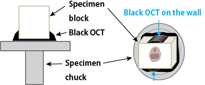

CoMBIの操作
凍結ブロックの準備
手順
- プラスティック製モールドを組み立てる
- 標本をOCTコンパウンドにうめる
- 液体窒素と冷媒（2-メチルブタン）を使って、急速に凍結する
- クリオスタット庫内に10分放置し、温度を安定させる
- OCTコンパウンドを塗って、試料台に貼り付ける。ブロックのOCTの色と、接着用OCTの色は、違えておく。
- 5分放置、温度を安定させる
ヒント
標本
-
スクロース浸漬の必要性は、試料の種類によって異なる。
神経組織はクラックができやすいが、スクロース浸漬によって、クラックを抑止できる。
-
タンニン酸で淡く染めておくと、ブロック面でコントラストがでる。
1% tannic acid/PBSで、1時間、2時間、一晩など。標本の大きさや染まりやすさによる。放置すると色が徐々に濃くなるため、染色後はすぐに凍結する。軟組織のコントラストが上がりやすいが、組織の種類によって効果が異なる。
ブロック
-
ブロックの形状は、直方体または直円筒がよい。モールドの材質は、プラスチックがよい。
ブロック面画像に写るブロック周囲形状が一定になり（円または長方形）、のちのズレ補正、Image registration（ImageJ, Image Stabilizer）の成功率をあげてくれる。
プラスティック製の円筒（1.5ml, 15ml, 50mlチューブを切ったもの）をモールドとして利用する。写真左は15mlチューブ。1箇所縦に割をいれることで、膨張を緩和し、凍結後に外しやすくしている。または、アクリル板から工作したモールドを使う。写真中央は、2mm厚アクリル板をレーザー加工、曲げ加工したもの。プラスチックの場合、結氷時の膨張による変形が最低限に抑えられる。プラスチックは熱の伝導が遅いため、ブロックが凍る際には、底面から早く凍り、側面はゆっくり凍る。これらモールドを使用するときは、アルミホイルで包んで、底面を作り、OCTや試料を入れる。
金属の場合、熱伝導が良すぎて、ブロックは、底面からも側面（モールド面）からも結氷・膨張し、逃げ場がなくなった試料の中心部は、上方へ向かって飛び出してしまう。写真右はアルミのL字鋼から削りだしたものです。
アルミホイル単独でもまあまあよい。側面がやわらかいので膨張を緩和できる。できるだけ直方体に形成して底面から凍結させる。外周の同一性は劣る。
市販のモールド（プラスティック製で壁がうすい）でもよいが、高さが足りない。

-
OCTコンパウンドに、絵の具を混ぜると、OCTの透明度がさがり、標本表面を詳細に3D描出できる。
色は、白または黒。濃度は、5-10% w/v。使う分だけ、用事調整してください。一週間もたつと分離するためです。いつも5-10mlを、注射筒2つで混ぜています。
絵の具は、ぺんてるFがよい。顔料粒子が細かいため拡大撮影しても粒子がみえにくい。
ポスターカラーや粉末顔料では、拡大すると粒子が見えてしまう。黒ならば万年筆インクでもよいが、水彩絵の具より高価。
凍結
-
凍結は、液体窒素とジメチルブタンを用いて、急速かつ底面からのみ行うのがよい。
冷凍庫やクリオスタット庫内では30-45分かかり、遅すぎますし、全方向から凍結されてしまいます。全方向からの凍結や遅い凍結では、氷の膨張による変形やクラックを生じやすいです。窒素なら底面から1-2分で凍結が完了します。
ドライアイスとヘキサン（n-hexane）を使う方法もありますが、ヘキサンはほぼレギュラーガソリンです。十分換気して使うことになります。扱ったことがありますが、気分が悪くなってやめました。
-
凍結による膨張がどうしても気になる試料の場合、ブロックの底面側に寄せて包埋・凍結する。
底面付近は、冷却が一番はじめに進む場所ですので、膨張の影響が最も少ないです。本番の切削では、底面から行えば、面出しが容易です。
CoMBI装置の設定
手順
- コントローラ、センサー、ブラシ、照明を設置する
- カメラを、コントローラ、電源、パソコンにつなげる
- センサーの位置調整、シャッタータイミングの調整
- カメラの設定
ヒント
CoMBI装置関連
-
センサーの位置調整
電動ハンドルの場合、センサーが検知する位置は、ブロックがすこし下ったところ。自動運転時のウィンドウ内に収まること。
手動ハンドルの場合、ブロックが最も上にきたところ。単振動なので、端で撮影したほうが、ズレが少ない。
-
LED照明は、斜めから二灯にしている
正面一投と比較すると、斜めのほうがブロック面像において、陰影ができやすく、構造物を認識しやすくなる。
-
リモートケーブルで、カメラと接続する
CoMBI側の端子は、2.5 mm、3 pinです（2019年以降のCoMBI）
CoMBI2017年モデルはNikonバナナプラグでした。一方、カメラ側の端子は、各社異なる。ケーブルに、エツミ社のリモートケーブル（リモートスイッチの一部）を使えば、各社カメラ端子がすべて、2.5 mm, 3pinとなり、CoMBIに繋げられる。
-
パソコンをカメラにつなげると便利（必須ではない）
画像を大きなモニタで表示できて、フォーカスの確認、画像の確認をしやすい。
ソニーやニコンの一部機種では、撮影中にUSB給電できる。バッテリ残量の心配がなくなる、給電用別売りアクセサリが不要になる。
-
ブラシでブロック面をきれいに保つ
切りくずが、ブロック面をおおってしまうことがあるが、ブラシで低減できる。
モータ壊れやすい。ブラシが動かなくなっても気にせず設置する。静置でも効果がある。
-
アンチロールプレートのほうが切りくず除去の効果は高い。
アンチロールプレートと共にブラシも使い、ブロック面撮影を成功させる。
カメラ関連
-
メニューで、「レンズなしシャッターを許可」
CoMBIのリリースケーブルによる制御を許可するためです。
-
画像の広さ
Nikonなら、FX（フルサイズ）、DX（APS-Cサイズ）、比率3:2, 5:4, 1:1などから選び、データ量を節約します。Sonyなら、フルサイズ、APS-Cサイズから選びます。
-
RAW画像
階調数は、12bit, 16bit。どちらでもよく、データ量の節約には12bitです。のちに変換するJPEG形式では8bitしかないので、どちらでも豊かな階調数をもち、画像調整にも耐えられます。Nikonでは圧縮RAWを選んでいます。
-
シャッター速度と感度
シャッター速度は、1/125〜1/250。ゆっくりでも動いているブロックを撮影するので、短めにしてあります。
ISO 100-400（Nikon D810）、ISO100-1600（Sony a7RIII、裏面照射型）、機種によって感度性能が異なります。ノイズが目立たない設定にしています。
テレコンを2枚で、4倍撮影にチャレンジするなら、「1/500、ISO800-3200、絞り開放」でまずは試して、ブレがないか、ノイズが許容できるか、を評価しましょう。
-
レンズの絞り
開放より一つ絞ったところ（カメラ用語の、1/3段絞ったことろに該当）を使っています。シャープで明るいところを選びました。
NikonカメラにFマウントレンズの時はカメラ本体でひと目盛り絞ったところに設定します。Fマウントレンズを他社製カメラにつけるとき（SonyカメラとKenkoまたはReyqualのアダプタを使うとき）は、アダプタでひと目盛り絞ったところを使っています。
2017年の論文ではF8を使っていました。これは、焦点深度を広げ、ブロック面全体のフォーカスが容易に合わせられることを優先しようとした結果です。おおよそ深さ1 mmの範囲で焦点が合います。いまでは、カメラ設置を厳密行えば、開放F値（焦点深度が浅い、約0.3 mm）でも、面全体にフォーカスが合和せられることが分かっています。
一般的に、「開放F値よりひとつ絞ったところが最もシャープに写る」といわれています。手前のマクロレンズ6本で試したところ、ひとつ絞ったところが最もシャープ、場合によっては、開放でもシャープでした。実際の撮影で画質に影響するのは、レンズの光学特性とともに、絞ると暗くなってセンサー側でノイズが増えることも考慮します。
-
結局カメラ設定はなにがいいの？
カメラの設定は、ぶれずに撮影でき、ノイズが許容範囲であればよし。
レンズの絞りは、カメラ設置を丁寧にやれば、ひとつ絞るか開放でよく、明るさをキープしたいです。
結局は、解析したい試料で、見たい構造物が見えることが誰しも必要です。研究データとしては比較群間、同一条件で撮影するのが大切な場合もあるでしょう。そのあとも同一条件での画像処理や、再現性を保証する作業記録も研究では大切です。
ブロック面の撮影
手順
-
凍結ブロックをチャックに接着するとき、白ブロックは、黒OCTで接着する。反対に、黒ブロックなら、白OCTで接着します。下図の左（ブロック面像で、ブロック周囲の形状が、はっきりします。明瞭かつ同一形状のブロック周囲像は、のちのズレ補正を成功させるために有効です。）

-
面出し1回目、かるく。ブロック上面の凹凸が無くなる程度。
- カメラを設置。慎重にブロックの真ん前に設置する。CM3050の場合、下げ角35度。
- LED照明を設置し、ON。
- ブロックの角度調整。ブロックの長軸と、レンズの軸が一直線になるよう、調節する。フォーカスを、ブロックの上面に合わせる、底面に合わせるを繰り返す。軸が合えば、底面の4辺が見えるようになる。
- ブロック側面に着色OCTを塗る。白ブロックなら黒OCTを側面に塗る。黒OCTなら白OCTを側面に。場所は、上面は必須。ブロック周囲のうち、上辺はゴミで隠れやすいが、塗ることで常に白黒ハッキリした線が見えることになる。上面1箇所でもよいが、念のため上面と側面ひとつ塗るときや、4面に塗るときもあります。塗ると温度が上がるのでしばらく待ちます。この作業は、後のズレ補正を確実に成功へ導くためです。上図の右。
- 面出し2回目、しっかりと。試料が見え始めるまで。
- フォーカスを合わせる。ブロック周囲4辺がどこでも合うことを確認する。
- スケールを撮影する。手動。Focus Hold、Release レバーを使う。
- SDカードに十分な容量があるか。前の実験の画像がたまっていないか。
- アンチロールプレートを使う。切りくずがブロック面にかぶらないようになる。効果絶大。
- いよいよ、連続撮影。Focus Hold ON、Sensor ON、(Brush ON)。
- 切片を取りたいときは、一時停止する
ヒント
カメラ関連
-
センサーがおかしい？やたらとシャッターを切る
ハンドルを掃除する。中性洗剤で汚れを落とす。よく使用していると手垢で汚れていきます。禁忌：アルコール液は使わない。クリオスタットの塗装がハゲます。
センサーとハンドル面の距離が適切でないかもしれません。近すぎ？ 連絡ください。調整用スペーサを送ります。その他、センサー値チェッカー（自作）も送れます。コロナ前には、出張修理をしていましたが、いまはオンライン相談とスペーサ、チェッカーを送ることで簡単に修正できます。センサーの説明書では6 mmが最も鋭敏とありますが、実際は幅広く作動し、CoMBIは、10 mm位で運転しています。
-
あれ？シャッター切ってない。さっきまで順調だったのに。
SDカードがいっぱいになっていませんか？前の実験の画像がたまっていたりして。データ管理はどうか丁寧に、自戒を込めて。
もしかして、電子接点付きマウントコンバータを使っていますか？電子接点付きでは、まれに、シャッターが切れません。例えば、Sonyカメラ＋Commliteアダプタ＋SigmaのNikonFレンズ、で経験しました。シンプルなアダプタ（ReyqualやKenko）を使ってください。問題なく安定稼働します。
-
CoMBIコントローラが動かない？
経験したことがあるのは、リリースケーブルの断線（新しくした）、レバースイッチ内の断線（これにはビックリした）。
-
カメラが操作不能？
Focus Holdが入ったままかもしれません。Focus Hold中は、カメラ本体の各種ボタンやMenuがいじれない仕様です。これは、改訂しようと考え中です（2021年）
-
画像転送ミス
まれに画像転送ミスが起こります。Nikonの場合、SDカードに残っているのがデフォルトの設定です。Sonyの場合、かつ、Sony Imaging Edgeを使用している場合、できれば、PC転送の設定を、SDカードにも残す、にしてください。
-
写真がボケている
様々な要因があります。カメラの設置があまかった。最初から調整ミス。途中レンズにぶつかった、途中クリオスタットに寄りかかった、手をついた。実験室の床が不安定。三脚が丈夫ではなく不安定なのを使ってしまっている。
-
カメラが日時を記憶しなくなった。
電源をOFFにすると、日付がリセットされてしまうという症状で、カメラ内の蓄電池が寿命です。そのままでも撮影はできます。実験のタイミングを考慮して、修理にだすのでいいでしょう。
-
シャッターの耐用回数
Nikon D810は、20万回がカタログ値です。2014年から使用して、4年間で30万回を超えました。シャッターに明確な不具合が出ていたわけではありませんが、上記の内蔵電池の修理の時に、交換してもらいました。修理料金は、内蔵電池交換とシャッター交換をあわせて、2万円台でした。 Sony a7RIIIの耐用回数は、50万回です。2017年からCoMBIにつかっていて、快調です。
その他
-
照明が暗い？
LEDもへたります。なんとなく暗くなってきたなと、ヒトの目でも感じるようになったら、交換です。連絡をいただくか、秋月で買えます。短命なときで1年くらいです。
使用後は、湿気を吸わないように、クリオスタット庫外へ出します。私は暖まるまで、ビニール袋に入れています。
-
ブラシがうごかない？
サーボモータは、もっともよく壊れるところです。でも心配ありません。ブラシは動かなくても効果的です。キュッキュと動かしたのは、半分ウケねらいでして、すみません。
-
切りくずがよくブロック面にかぶる
アンチロールプレートが効果絶大です。
-
切りくずがブロック周辺につきやすい
ブロックの温度が高いのかも知れません。温度を下げます。温度を幅5度以内で調整します。
もしくはLED照明を暗くします。通常は12Vで点灯させていますが、9Vで暗めになります。9Vにするには、2020年版CoMBIコントローラを使用するか、電源（スイッチングACアダプタ、9V、1A程度、700円）を別に用意するかします。
黒OCTを使っている場合、照明のせいで温度が上がりやすいようです。
-
試料周囲に糸状のゴミが出やすい
試料周囲とは、ブロック周囲ではなく、試料とOCTの境界部のことです。この場合、温度をさげます。幅5度以内で調整。
-
温度はどれがいいか
基本的にいつもつかっている厚さと温度で撮影できます。厚めなら温度をあげ、薄めなら温度を下げます。具体的には、標準の8-10 µm切片なら-20度。厚め20-40 µmなら-15度。薄め5 µmなら、-22度。試料によっても異なります。Leicaクリオスタットの説明書や、書籍（細胞・組織染色の達人、羊土社）を参考に。
-
クリオスタット庫内をよごしてしまう、、、
クリオスタットの使用後、70%EtOHをティッシュにつけて、拭き掃除できます。みごとにきれいに元通りになります。約束ごととして、安全第一で、かならず刃をはずすこと。機器保全のため、EtOHは噴霧ではなく、清拭で使用します。
CoMBIでは多くの削りカスがでます。クリオスタットの汚れが気になります。とくに共通機器の場合はなおさら気がかりですが、上記でキレイになります。
切片採取
連続撮影を一時停止し、その間に切片を採取できます。Leica CM3050電動モデルを使っている場合は、ボタン「1回切りモード」を選んで、一枚だけ採取します。もしくは手動で切削して切片を採取します。
- 掃除のために、連続撮影を停止。アンチロールプレートをキレイにする
- アンチロールプレートを冷やすと、切片はまっすぐのまま入り込みやすい。液体窒素をプラスティックカップに入れて、ガラスの上にかざす。注意：金属カップで圧着するとガラスが割れます!プラスティックなら大丈夫です
- ブロック面を撮影、一回。電動でもよいけれど、手動のほうが切片が安定する。
- 切削、一回。試料ブロックが下へいったところで停止。
- 切片採取。ガラススライドへ。
- ブロック面像のファイル名を、スライドガラスと実験ノートに記録する。
- カメラ単独使用の場合：時刻を秒単位まで記録する。のちにブロック面像ファイルの生成時刻と照合する。カメラ内の時計と手元の時計あわせを済ませておくこと。
- カメラをPCでつなげている場合：Sony Imaging Edgeなら、画像の転送先フォルダ内で、ファイル名を確認できる。Nikon & Mac & 意地でも無料の場合、Mac付属のImageCaptureでカメラ内のファイル名を確認できる。
- ブロック面撮影を再開する
ヒント
- 一般的な厚さ8-10µmと温度-20度であれば、普段通り切片を採れます。高精細3Dを目指している場合、切削厚が薄くなり、切片採取は難しくなります。私の凍結切片における最薄記録は4µm、-23度で、かなり難しかったです。大型の標本の場合、20µmや40µmも使ったことがあります。-15度くらいが良いところです。
- 刃こぼれしやすい標本だと、連続撮影している間に、刃が痛んで切片を採りづらくなります。なんとか切片を採りたいときは、切片にしたい領域が先に現れるように包埋したり、硬い組織（幼虫の大顎）があとで現れるように包埋したりしました。
- 少々の歪みがあっても、3Dデータと相関させることで、切片解析のときに「歪んでます！」と断言できるのが、CoMBIの良いところです。アーティファクトの歪みと、実験条件による形態変化を区別できます。